Headhunter D.C.
Bahia, Brasil. Desde 1987
Rise of the Damned...
O sexto álbum do Culto da Morte brasileiro. Onze faixas de Unholy Death Metal, forjadas em Salvador, Bahia.
Eis a ascensão dos amaldiçoados
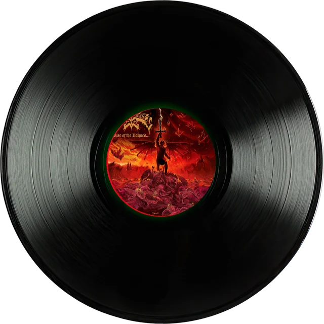
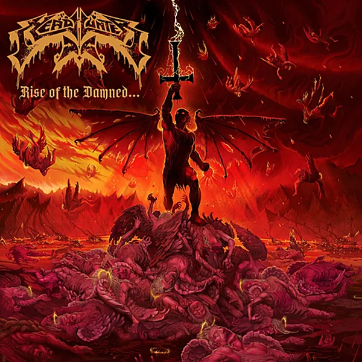
Após 14 anos, o Culto da Morte brasileiro retorna com uma nova oferenda de pura brutalidade profana!
“Rise of the Damned...” transcende a música. É uma espécie de “grito dos excluídos”, a ascensão sobre tudo o que tentou sufocar a banda nos últimos tempos.
- Lançamento
- 06/06/2026
- Selo
- Mutilation Records
- Faixas
- 11
- Baixo no álbum
- Danilo “D. Morbidus” Coimbra
- Bateria no álbum
- Daniel Brandão
As onze faixas
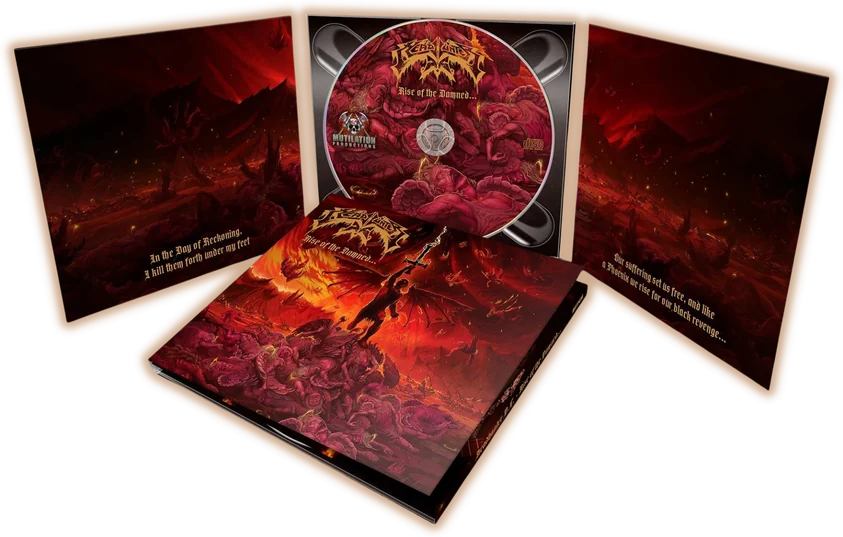
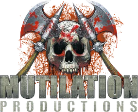
Uma parceria com a Mutilation Records que já dura mais de 25 anos.
Ouça no Spotify
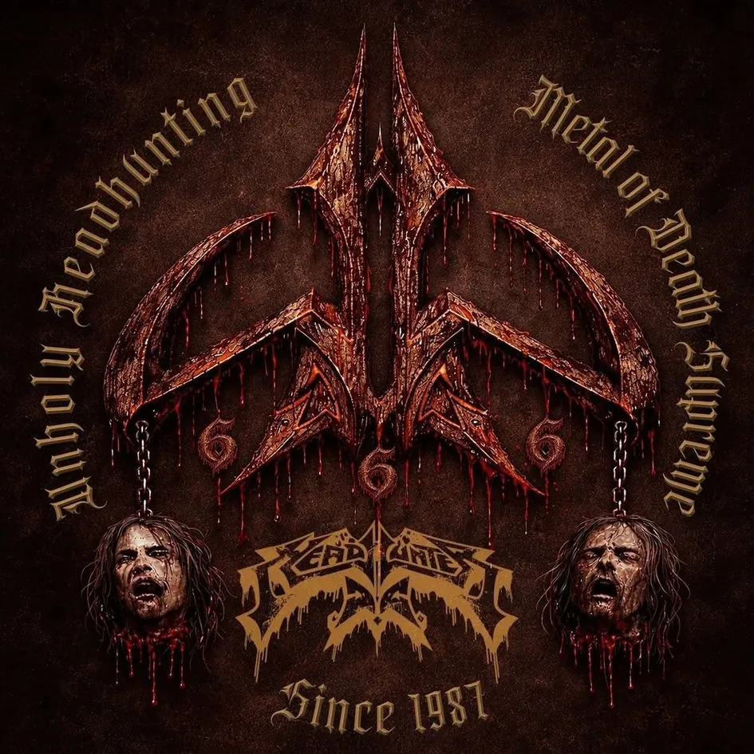
Mais ouvidasHeadhunter D.C.- Rise of the Damned...Álbum, 2026
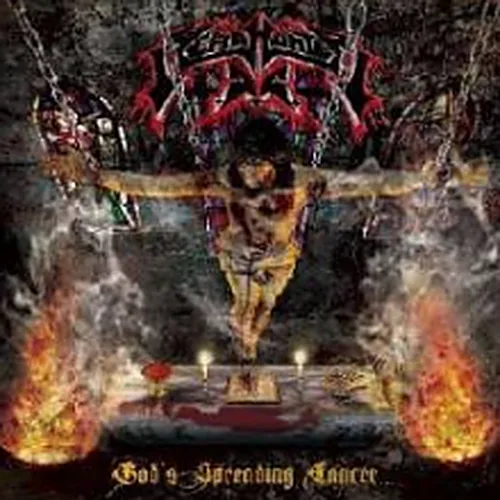
God’s Spreading Cancer...Álbum, 2007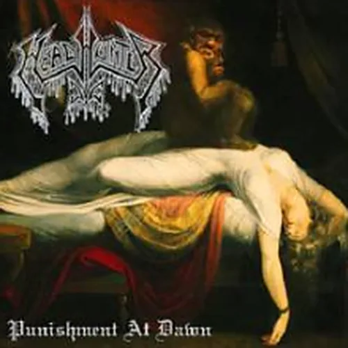
Punishment at DawnÁlbum, 1993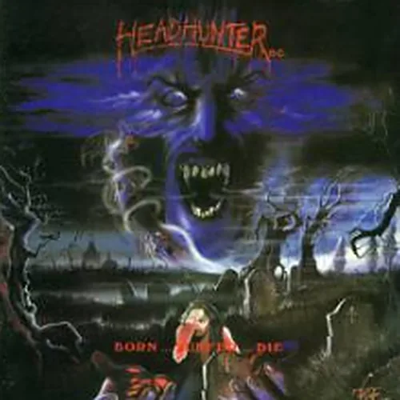
Born... Suffer... DieÁlbum, 1991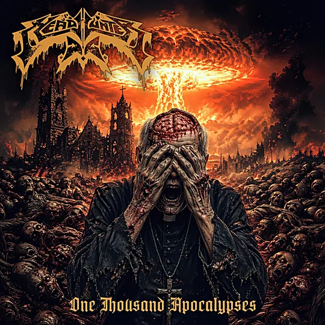
One Thousand ApocalypsesSingle, 2026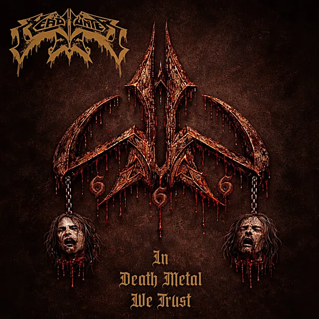
In Death Metal We TrustSingle, 2026
“É puro, brutal, inquietante e assombroso Metal da Morte da verdadeira velha escola do gênero, saindo das profundezas de nossas mentes, corações e almas obscuras.”Sérgio “Nekrobaloff666” Borges
Biografia e legado
Fundada em 1987 em Salvador, Bahia, Headhunter D.C. (Death Cult) é uma das bandas pioneiras do death metal brasileiro. O grupo surgiu em 1986 sob o nome Túmulo, mas logo adotou a identidade que se tornaria referência na cena extrema. Desde o início, sua visão artística esteve ligada a temas como morte, ódio, sofrimento e anticristianismo, consolidando uma estética agressiva e desafiadora.
A banda construiu sua trajetória no underground nacional e internacional, permanecendo ativa por quase quatro décadas. Seu estilo é marcado pela fidelidade ao death metal clássico, sem concessões às tendências comerciais. Para os integrantes, a música é mais que entretenimento: é uma arma cultural e forma de resistência, como ressaltado em entrevistas e artigos recentes. Essa postura os diferencia em um mercado musical cada vez mais guiado por algoritmos e patrocínios.
O Headhunter D.C. possui uma discografia extensa, incluindo demos, álbuns completos, splits e gravações ao vivo. Entre seus trabalhos mais importantes estão:
- Born… Suffer… Die (1991)
- Punishment at Dawn (1993)
- ...And the Sky Turns to Black... (2000)
- God’s Spreading Cancer... (2007)
- ...In Unholy Mourning... (2012)
- Rise of the Damned... (2026)
A banda também participou de diversas compilações e tributos, reforçando sua presença na cena global.
Reconhecida como um dos nomes mais respeitados do metal extremo brasileiro, o Headhunter D.C. manteve relevância ao longo dos anos, inspirando novas gerações de músicos e fãs. Sua trajetória é marcada por consistência artística, resistência cultural e devoção ao death metal, tornando-os um verdadeiro ícone da música pesada no Brasil.
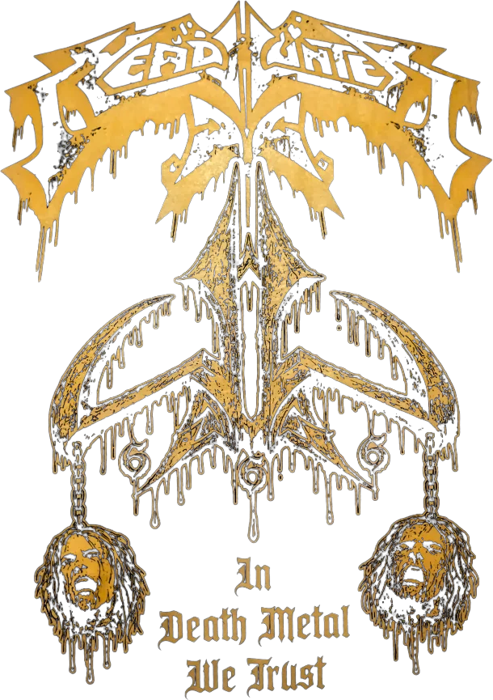
- 1986A banda surge em Salvador com o nome Túmulo.
- 1987Nasce o Headhunter D.C., o Death Cult.
- 1991Estreia com Born... Suffer... Die.
- 1993Punishment at Dawn.
- 2000...And the Sky Turns to Black...
- 2007God’s Spreading Cancer...
- 2012...In Unholy Mourning...
- 2013Turnê europeia por 9 países, o ano com mais shows da história da banda.
- 2017O fundador Paulo Lisboa deixa a banda após quase 30 anos.
- 2026Rise of the Damned... e a volta ao formato de quinteto.
Formação
Demigod
Héracles CardosoBaixoHellriff
Michael GonçalvesGuitarraNekrobaloff666
Sérgio BorgesVochaosD. Morbidus
Danilo CoimbraGuitarrasDeath Ax
Juan MachadoBateria
Discografia
- 2026
Rise of the Damned...
Sexto álbum. 11 faixas, lançado em 06/06/2026 pela Mutilation Records.
Ouvir no Spotify 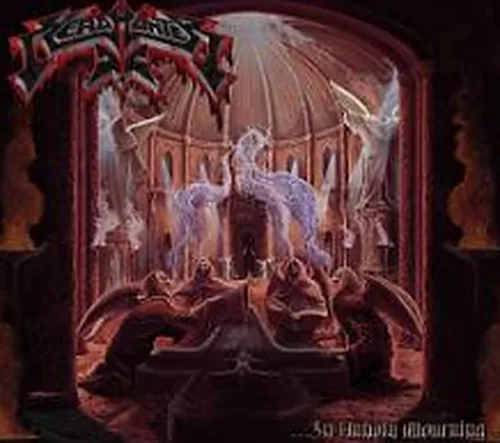
2012...In Unholy Mourning...
Quinto álbum, o último antes de um hiato de 14 anos.
Perfil da banda no Spotify- 2007
God’s Spreading Cancer...
Quarto álbum.
Ouvir no Spotify 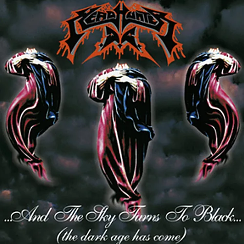
2000...And the Sky Turns to Black...
Terceiro álbum, de subtítulo “The Dark Age Has Come”.
Perfil da banda no Spotify- 1993
Punishment at Dawn
Segundo álbum.
Ouvir no Spotify - 1991
Born... Suffer... Die
Primeiro álbum, celebrado em 2017 no Palco do Rock por seus 25 anos.
Ouvir no Spotify
Agenda de shows
Novas datas serão anunciadas em breve
Quer o Culto da Morte na sua cidade? Fale direto com a banda.
Notícias
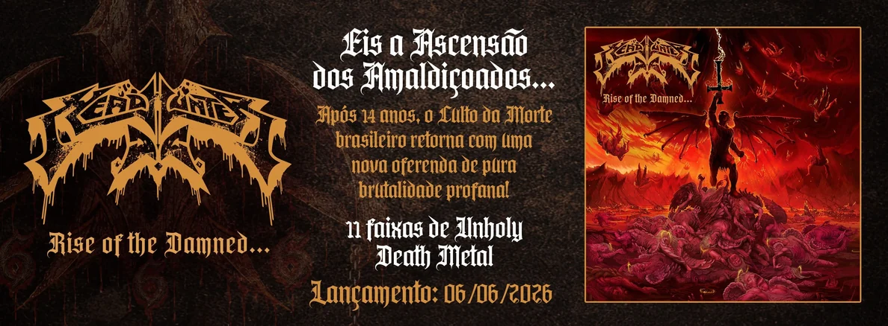
Press release, 2026“Que comece a ascensão dos amaldiçoados!!!”
Headhunter D.C. retorna com a fúria profana de “Rise of the Damned...”, seu sexto álbum de estúdio.
- Formação, 2026
O Culto volta a ser um quinteto
Michael “Hellriff” Gonçalves assume a segunda guitarra e Juan “Death Ax” Machado a bateria.
- Vídeo, 2026
“Gospel of Doom” ganha lyric video
Feito por fã e publicado como oficial no canal da banda.
- Singles, 2026
“One Thousand Apocalypses” e “In Death Metal We Trust”
Os dois singles do novo álbum, no YouTube e no Spotify.
- Histórico, 2013
Tour europeia por 9 países
O maior número de apresentações em um ano desde a fundação da banda.